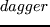

documentclass[a4paper,12pt]scrbook
usepackagefancyhdr
usepackage[a4paper,top=2cm,bottom=2cm]geometry
usepackagegraphicx
usepackage[dvipsnames]pstricks
usepackagepst-text
usepackagepst-grad
usepackagelipsum
par
setlengthvoffset0.5in
setlengthoddsidemargin28pt
setlengthevensidemargin0pt
renewedcommandfootrulewidth0.5pt
lhead[fancyplainLarge thepage]fancyplainrightmark
rhead[fancyplainleftmark]fancyplainLarge thepage
pagestylefancy
lfoot[emphAnto & Zeli]
rfoot[]emphAnto & Zeli
cfoot
topmargin=-0.5in
textheight=9in
par
makeatletter
newedcommandjudul[1]parindent z@ centering
interlinepenaltyM Large bfseries #1par
nobreak vskip 20p@
newedcommandsubjudul[1]parindent z@
interlinepenaltyM bfseries #1par
nobreak vskip 10p@
newedcommandlagu[1]parindent z@
interlinepenaltyM slshape mdseries Large textit#1par
nobreak vskip 40p@
newedcommandketerangan[1]parindent z@ slshape large
interlinepenaltyM textsl#1par
nobreak vskip 5p@
par
renewedenvironmentdescription listlabelwidthz@ itemindent-leftmargin
letmakelabeldescriptionlabel
endlist
renewedcommanddescriptionlabel[1]hspacelabelsep
normalfontbfseries #1
par
makeatother
par
newedcommandBU[1]beginitemize item[U:] #1 enditemize
newedcommandBI[1]beginitemize item[I:] #1 enditemize
newedcommandBP[1]beginitemize item[P:] #1 enditemize
newedcommandBPL[1]beginitemize item[Anto:] #1 enditemize
newedcommandBPW[1]beginitemize item[Zeli:] #1 enditemize
newedcommandBPLW[1]beginitemize item[A+Z:] #1 enditemize
newedcommandBOT[1]beginitemize item[OT:] #1 enditemize
newedcommandBS[1]beginitemize item[Saksi:] #1 enditemize
newedcommandBW[1]beginitemize item[Wakil:] #1 enditemize
newedcommandbpcamantriYohanes Subaryadi
newedcommandibucamantriVeronika Suwardiyanti
newedcommandbpcamantraYohanes Sudarmadi
newedcommandibucamantraAnastasia Djuwarni
newedcommandsaksisatuBapak Drs. B. Kusmanto
newedcommandsaksiduaBapak Drs. Neo Suradi
par
newedcommandromoRobertus Triwidodo, Pr
newedcommandcamantriR Zeli Puspitasari
newedcommandcamantraFX Arie Wibowo Sudaryanto
par
newedcommandnamagerejaGereja Bunda Maria Maguwo
par
newedcommandlagupembukaanAku Bersyukur (textslAsri Savsavubun/koor)
par
Di hari ini aku bersyukur, atas rahmatMu Tuhan.
Di hari ini aku bahagia, atas rahmatMu Tuhan.
Syukur pujian kusampaikan kepada Tuhan
Tuhan selalu membimbingku syukur pada Tuhan
newedcommandlagukyrieMB 186
newedcommandlagugloria
newedcommandlaguantarbacaanHatiku (koor)
Reff:
Hatiku kusembahkan padaMu
Kasih abadi Kaulimpahkan kepadaku
HatiMu slalu murah dan penyayang
Hatiku slalu cenderung berdosa
Tapi cintaMu mengiring langkahku
Yesus penebusku
KuasaMu slalu memeluk diriku
Kuasaku slalu menentang hukumMu
Tapi cintaMu mengiring langkahku
Yesus penebusku
JalanMu slalu mengarah ke Bapa
Jalanku sering diliput gulita
Tapi cintaMu mengiring langkahku
Yesus penebusku
newedcommandlagubaitpengantarinjil
newedcommandlagupasangcincinCincin Kami (textslEsin Savsavubun)
Cincin tanda kami cinta kasih sejati, tlah melingkar di jemari.
Cincin tanda kami cinta kasih sejati, tlah mengikat dua hati.
par
Di hadapan altar yang suci ini, kita saling serah diri.
Di hadapan altar yang suci ini, cinta kita kan abadi.
par
Badai taufan kan menghadang, namun cinta kita tak kan goyang.
Tuhan kan memberi jalan serta cahayanya mengarungi samodera cinta.
par
Tuhan bimbinglah kami berdua berlayar dalam bahtera.
Tuhan bimbinglah kami berdua hidup seturut sabdaMu.
par
Badai taufan kan menghadang, namun cinta kita tak kan goyang.
Tuhan beri kami kasih serta cinta, spanjang hdup kami.
newedcommandlagusungkemDi Doa Ibuku Namaku Disebut (textslAsri
Savsavubun)
par
Di waktu ku kecil, gembira dan senang
Tiada duka kukenal, tak kunjung mengerang
Disore hari nan sepi....ibuku terbelut
Sujud berdoa ku dengar namaku disebut
par
Di doa ibuku, namaku disebut
Di doa ibuku kudengar, ada namaku disebut
par
Sering ini kukenang, di masa yang berat
Di kala hidup mendesak dan nyaris kutersesat
Melintas gambar ibuku, sewaktu bertelut
Kembali sayup kudengar, ....namaku disebut
par
Di sore hari nan sepi... ibuku bertelut
Sujud berdoa ku dengar namaku disebut
Di doa ibuku, namaku disebut
Di doa ibuku dengar ada namaku disebut....
Ada namaku di sebut
par
newedcommandlagusungkemmariaAve Maria (textslEsin Savsavubun)
par
Ave Maria Gratia plena
Maria Gratia plena
Maria Gratia plena
Ave, ave dominus
Dominus tecum
par
Benedicta tu in mulieribus
Et benedictus
Et benedictus fructus ventris
Ventris tui Jesus
Ave Maria
par
newedcommandlagupersembahanBetapa Hatiku (koor)
par
Betapa hatiku berterimakasih Yesus
Kau mengasihiku, Kau memilikiku,
par
Hanya ini Tuhan persembahanku
Segenap hidupku jiwa dan ragaku
Sbab tak kumiliki harta kekayaan
Yang cukup berarti tuk kupersembahkan
par
Hanya ini Tuhan permohonanku
Terimalah Tuhan persembahanku
Pakailah hidupku sebagai alatMu, seumur hidupku
newedcommandlagusanctus
newedcommandlagubapakamiMB 144
newedcommandlaguagnusdeiMB 278
newedcommandlagukomuniKumau Cinta Yesus (textslAsri Savsavubun)
par
Kumau cinta Yesus selamanya
Kumau cinta Yesus selamanya
Meskipun badai silih berganti dalam hidupku
Ku tetap cinta Yesus selamanya
par
Ya Bapa Bapa, ini aku anakMu
Layakkanlah seluruh hidupku
Ya Bapa Bapa, ini aku anakMu
Pakailah sesuai dengan rencanaMu
newedcommandlagupenutupO Sanctisima (koor)
par
O Sanctissima, O Piissima
Dulcis Virgo Maria
Mater amata, Intemerata
Ora, Ora Pro Nobis
par
Tu solatium et refugium
Virgo Mater Maria
Quidquid optamus per te speramus
Ora, ora pro nobis
par
usepackage[bahasa]babel
selectlanguagebahasa
input"../indohyp.tex"
par
titleEKARISTI
SAKRAMEN PERKAWINAN
author
includegraphics[scale=0.25]anto-zeli.eps
camantra dan camantri
oleh
Romo romo
namagereja
date13 Juni 2009
par
begindocument
thispagestyleempty
newsaveboxIBox
sboxIBoxincludegraphics[scale=0.25]anto-zeli.eps
pssetunit=1in
beginpspicture(5in,8in)
DeclareFixedFontPTT1pplbit0.5in
DeclareFixedFontPTsmallT1pplbit0.4in
DeclareFixedFontPTsmallestT1pplbit0.3in
DeclareFixedFontPTtextT1pplbit11pt
DeclareFixedFontLogoT1pbkmn0.3in
rput[cb](3,4)useboxIBox
rput[cb](3,7)PT EKARISTI
rput[cb](3,6.25)PT SAKRAMEN PERKAWINAN
rput[cb](3,2.2)PTsmallest camantra
rput[cb](3,1.8)PTsmallest dan
rput[cb](3,1.4)PTsmallest camantri
rput[cb](3,0.4)PTsmallest oleh
rput[cb](3,0)PTsmallest Romo romo
par
endpspicture
par
begincenterLarge namagereja
par
13 Juni 2009
endcenter
par
sffamily
Large
newpage
thispagestyleempty
newpage
thispagestyleempty
par
judul UPACARA PENYAMBUTAN
keterangan Kedua mempelai bersiap di pintu utama gereja didampingi oleh orang
tua dan keluarga, serta salah seorang wakil keluarga untuk menyerahkan mempelai
kepada gereja.
par
BP Selamat datang Bapak, Ibu, dan Saudara-saudara sekalian di namagereja ini.
Pada hari ini kita akan memberikan dukungan dan dorongan doa atas Penerimaan
Sakramen Perkawinan antara camantra putra Bapak bpcamantra dan Ibu
ibucamantra dengan camantri puteri Bapak bpcamantri dan Ibu ibucamantri yang
akan dipimpin oleh Romo romo .
par
Allah menciptakan manusia menurut citra-Nya sebagai pria dan wanita. Mereka
diberi kemampuan untuk saling mencintai dan Allah memberkati serta berfirman:
'Beranak cuculah dan bertambah banyak dan penuhilah bumi dan taklukkanlah'.
par
Dengan demikian perkawinan oleh Allah sebagai suatu lembaga keselamatan sebab
dengan membangun keluarga manusia dapat menghayati darma baktinya kepada Allah
demi kelangsungan dunia, yaitu melaksanakan cinta kasih, daya cipta dan kuasa
mengatur yang berasal dari Allah.
par
Acara ini akan diawali dengan penyambutan kedua mempelai oleh Romo, marilah kita
berdiri.
par
keterangan Imam dan putera altar menyambut mempelai di depan pintu
par
subjudul Penerimaan Mempelai
BI Saudara sekalian yang terkasih dalam Kristus, selamat datang di rumah Tuhan
ini. Semoga damai dan kasih Allah selalu besertamu.
BU Dan sertamu juga.
par
subjudul Penyerahan Mempelai
BW Romo yang terhormat, perkenankanlah saya, selaku wakil keluarga mempelai,
menyerahkan putra putri kami camantra dan camantri ke hadapan Romo romo agar
Romo berkenan mengukuhkan pernikahan mereka menurut tata cara Gereja Katolik
yang kudus.
par
BI Selaku pejabat gereja katolik, saya mengucapkan terima kasih, dan dengan
tulus ikhlas menerima kedua mempelai ini. Saya akan mohonkan berkat Tuhan agar
ikatan perkawinan mereka sungguh diteguhkan seumur hidup.
Dan semoga air suci ini menyucikan saudara-saudari agar pantas menerima berkat
Tuhan dalam upacara yang agung ini.
par
keterangan (Imam memerciki mempelai dan rombongan dengan air suci)
Dan sekarang saya mengundang kedua mempelai bersama seluruh keluarga untuk
menuju altar Tuhan.
par
subjudul Perarakan
keterangan Umat berdiri, Romo, Putra Altar, kedua mempelai, para saksi serta
orang tua kedua mempelai berarak menuju ke depan altar.
par
lagu Lagu pembukaan - lagupembukaan
par
judul RITUS PEMBUKA
par
subjudul Tanda Salib dan Salam
BI Demi Nama Bapa dan Putera dan Roh Kudus
BU Amin
BI Kasih karunia, rahmat dan damai sejahtera dari Allah Bapa dan dari
Putera-Nya Yesus Kristus, besertamu
BU Dan sertamu juga
par
subjudul Kata Pengantar dari Romo
par
subjudul Pernyataan Tobat
BI Saudara saudari terkasih, marilah kita menyesali segala dosa-dosa kita dan
mohon ampun agar kita layak merayakan perjamuan kudus ini.
BI Saya mengaku dots
BU Kepada Allah yang Maha Kuasa dan kepada saudara sekalian bahwa saya telah
berdosa dengan pikiran dan perkataan, dengan perbuatan dan kelalaian. Saya
berdosa, saya berdosa, saya sungguh berdosa. Oleh sebab itu saya mohon kepada
Santa Perawan Maria, kepada para malaikat dan orang kudus, dan kepada saudara
sekalian supaya mendoakan saya kepada Allah Tuhan kita.
BI Semoga Allah yang Maha Kuasa mengasihi kita, mengampuni dosa kita, dan
menghantar kita ke hidup yang kekal.
BU Amin
par
lagu Tuhan Kasihanilah Kami lagukyrie
par
subjudul Doa Pembukaan
BI Marilah kita berdoa
par
Allah pencipta dan penebus kami, Engkau menghendaki agar pria dan wanita
membangun keluarga yang bahagia. Kedua hamba-Mu ini: camantra dan camantri
sudah siap untuk memasuki bahtera perkawinan.
par
Berkatilah cinta kasih mereka, supaya tahan uji dalam untung dan malang.
Anugerahkanlah mereka berdua kesetiaan, kebahagiaan, serta keturunan yang dapat
dibanggakan. Demi Yesus Kristus, Putra-Mu, Tuhan dan pengantara kami, yang hidup
dan berkuasa kini dan sepanjang masa.
par
BU Amin.
par
judul LITURGI SABDA
subjudul Bacaan pertama Pengkhotbah 3: 1 - 11
BP
textitUntuk segala sesuatu ada waktunya
par
Untuk segala sesuatu ada masanya, untuk apapun di bawah langit ada waktunya.
Ada waktu untuk lahir, ada waktu untuk meninggal, ada waktu untuk menanam, ada waktu untuk mencabut yang ditanam;
ada waktu untuk membunuh, ada waktu untuk menyembuhkan; ada waktu untuk merombak, ada waktu untuk membangun;
ada waktu untuk menangis, ada waktu untuk tertawa; ada waktu untuk meratap; ada waktu untuk menari;
ada waktu untuk membuang batu, ada waktu untuk mengumpulkan batu; ada waktu untuk memeluk, ada waktu untuk menahan diri dari memeluk;
ada waktu untuk mencari, ada waktu untuk membiarkan rugi; ada waktu untuk menyimpan, ada waktu untuk membuang;
ada waktu untuk merobek, ada waktu untuk menjahit; ada waktu untuk berdiam diri, ada waktu untuk berbicara;
ada waktu untuk mengasihi, ada waktu untuk membenci; ada waktu untuk perang, ada waktu untuk damai.
par
Apakah untung pekerja dari yang dikerjakannya dengan berjerih payah?
par
Aku telah melihat pekerjaan yang diberikan Allah kepada anak-anak manusia untuk melelahkan dirinya.
Ia membuat segala sesuatu indah pada waktunya, bahkan Ia memberikan kekekalan dalam hati mereka. Tetapi manusia tidak dapat menyelami pekerjaan yang dilakukan Allah dari awal sampai akhir.
par
Demikianlah sabda Tuhan
par
BU Syukur kepada Allah
par
lagu Lagu Pengantar Bacaan - laguantarbacaan
par
subjudul Bacaan Injil
BI Tuhan sertamu
BU Dan sertamu juga
BI Inilah Injil Suci Yesus Kristus menurut Santo Yohanes (Yoh 2: 1-10)
BU Terpujilah Kristus
par
BI
Pada hari ketiga ada perkawinan di Kana yang di Galilea, dan ibu Yesus ada di situ;
Yesus dan murid-murid-Nya diundang juga ke perkawinan itu.
Ketika mereka kekurangan anggur, ibu Yesus berkata kepada-Nya: "Mereka kehabisan anggur."
Kata Yesus kepadanya: "Mau apakah engkau dari-Ku, ibu? Saat-Ku belum tiba."
Tetapi ibu Yesus berkata kepada pelayan-pelayan: "Apa yang dikatakan kepadamu, buatlah itu!"
par
Di situ ada enam tempayan yang disediakan untuk pembasuhan menurut adat orang Yahudi, masing-masing isinya dua tiga buyung.
Yesus berkata kepada pelayan-pelayan itu: "Isilah tempayan-tempayan itu penuh dengan air." Dan mereka pun mengisinya sampai penuh.
Lalu kata Yesus kepada mereka: "Sekarang cedoklah dan bawalah kepada pemimpin pesta." Lalu mereka pun membawanya.
par
Setelah pemimpin pesta itu mengecap air, yang telah menjadi anggur itu - dan ia tidak tahu dari mana datangnya, tetapi pelayan-pelayan, yang mencedok air itu, mengetahuinya - ia memanggil mempelai laki-laki,
dan berkata kepadanya: "Setiap orang menghidangkan anggur yang baik dahulu dan sesudah orang puas minum, barulah yang kurang baik; akan tetapi engkau menyimpan anggur yang baik sampai sekarang."
par
Demikianlah Injil Tuhan
par
BU Terpujilah Kristus
par
subjudul Homili
par
judul LITURGI PERKAWINAN
par
subjudul Pernyataan Saksi
keterangan Mempelai berdiri didampingi oleh kedua saksi dan orang tua
par
BI Mempelai berdua yang berbahagia, saudara telah hadir di gereja ini untuk
melangsungkan perkawinan, di hadapan pejabat Gereja dan disaksikan oleh umat
beriman. Kiranya Tuhan memberkati dan meneguhkan saudara. Namun sebelum
perkawinan ini diresmikan perkenankan saya meminta pernyataan dari para saksi.
Para saksi yang terhormat, adakah sesuatu yang menghalangi pernikahan ini
menurut adat dan ajaran Gereja Katolik?
par
BS Sepanjang pengetahuan kami, tidak ada halangan apapun untuk meresmikan
pernikahan ini menurut tata cara gereja katolik. Kami mendukung sepenuhnya
permohonan kedua mempelai, dan kami bersedia menjadi saksinya.
par
subjudul Pernyataan Mempelai
BI Mempelai berdua yang berbahagia, setelah saya mengadakan penyelidikan
seperlunya, saya selaku pejabat Gereja meluluskan permintaan Anda berdua. Akan
tetapi sebelum perkawinan Anda berdua ini diresmikan, saya persilahkan kedua
mempelai menyatakan kesungguhan hati Anda berdua di hadapan Allah dan semua yang
hadir.
par
BPL Saya, camantra , menyatakan bahwa saya sungguh ingin meresmikan perkawinan
ini dengan ikhlas hati. Saya bersedia mencintai dan menghormati istri saya
sepanjang hidup saya. Saya bersedia menjadi bapak yang baik, bagi anak-anak yang
dipercayakan Tuhan kepada saya serta mendidik mereka dalam terang iman
Kristiani.
par
BPW Saya, camantri , menyatakan bahwa saya sungguh ingin meresmikan perkawinan
ini dengan ikhlas hati. Saya bersedia mencintai dan menghormati suami saya
sepanjang hidup saya. Saya bersedia menjadi ibu yang baik, bagi anak-anak yang
dipercayakan Tuhan kepada saya serta mendidik mereka dalam terang iman
Kristiani.
par
subjudul Perjanjian Perkawinan
BI Maka tibalah saatnya untuk meresmikan perkawinan Anda berdua. Saya
mempersilahkan Anda masing-masing mengucapkan perjanjian perkawinan satu-persatu
sambil meletakkan tangan di atas Kitab Suci ini. Dengan harapan janji saudara
berdua menjadi ikatan seumur hidup dalam kasih Tuhan.
par
subjudul Janji Mempelai Pria
BPL Di hadapan Romo dan para saksi, saya camantra menyatakan dengan tulus
ikhlas bahwa camantri yang hadir di sini, mulai sekarang ini menjadi istri
saya. Saya berjanji setia kepadanya dalam untung dan malang dan saya mau
mencintai dan menghormatinya seumur hidup. Demikianlah janji saya, demi Allah
dan Injil suci ini.
par
subjudul Janji Mempelai Wanita
BPW Di hadapan romo dan para saksi, saya camantri menyatakan dengan tulus
ikhlas bahwa camantra yang hadir di sini, mulai sekarang ini menjadi suami
saya. Saya berjanji setia kepadanya dalam untung dan malang dan saya mau
mencintai dan menghormatinya seumur hidup. Demikianlah janji saya, demi Allah
dan Injil suci ini.
par
subjudul Peneguhan Perkawinan
BI Atas nama Gereja Allah dan di hadapan para saksi dan hadirin sekalian, saya
menegaskan bahwa perkawinan yang telah diresmikan ini adalah perkawinan Katolik
yang sah. Semoga sakramen ini menjadi bagi Anda berdua sumber kekuatan dan
kebahagiaan. Yang dipersatukan Allah, janganlah diceraikan manusia.
BU Amin
par
subjudul Doa untuk Mempelai
BI Saudara saudari yang terkasih, marilah kita berdoa dengan rendah hati,
supaya Tuhan rela mencurahkan berkat dan rahmat-Nya atas kedua mempelai ini yang
telah menikah dalam Kristus. Mereka sudah dipersatukan dalam perjanjian suci.
Semoga mereka bersatu padu dalam cinta kasih
par
BI Allah, Engkau menciptakan segala sesuatu dengan kekuatan kuasa-Mu. Engkau
menciptakan manusia menurut citra-Mu. Engkau menciptakan pria dan wanita supaya
mereka dipadukan menjadi satu. Engkau mengajarkan bahwa perkawinan yang telah
Kau teguhkan tak boleh diceraikan.
Engkau juga menguduskan ikatan perkawinan dan mengangkat perjanjian perkawinan
menjadi lambang persatuan Kristus dengan gereja-Nya.
par
Pandanglah dengan rela mempelai wanita ini agar rahmat cinta dan damai sejahtera
tinggal dalam hatinya. Semoga ia menjadi istri yang setia dan ibu yang baik
seperti wanita-wanita yang kudus yang dipuji dalam Kitab Suci.
par
Kami berdoa pula untuk mempelai pria ini semoga ia selalu berusaha untuk
mencintai dengan tulus ikhlas dan menunaikan tanggung jawabnya baik terhadap
istri dan anak-anak maupun terhadap masyarakat.
par
Dan kini kami mohon kepada Mu ya Tuhan,
Semoga kedua mempelai ini tetap berpegang pada iman dan perintah-perintah-Mu.
Semoga mereka bersatu sebagai suami-istri, terpandang karena peri hidup yang
baik dan berjasa untuk sesama dalam lingkungan mereka. Kuatkanlah mereka dengan
semangat Injil sehingga menjadi saksi Kristus bagi semua orang. Kuatkanlah
mereka dengan Roh Kudus-Mu agar mampu menghadapi setiap godaan dan tantangan
kehidupan. Dan akhirnya mereka mampu pula menjadi keluarga yang berbahagia.
Semoga mereka subur dan berketurunan menjadi orangtua yang patut dicontoh dan
berbahagia melihat anak cucunya. Semoga mereka mencapai usia lanjut dan akhirnya
memasuki kehidupan bahagia dalam kerajaan surga.
par
Demi Kristus, pengantara kami.
par
BU Amin
par
subjudul Pemberkatan Cincin
keterangan Diiringi lagu lagupasangcincin
BI Ya Allah sumber kesetiaan, berkatilah kedua cincin ini supaya menjadi
lambang cinta dan kesetiaan tanpa akhir. Semoga kedua cincin ini mengingatkan
kedua mempelai akan janji setia yang mereka ucapkan pada hari ini. Demi Kristus
Tuhan dan pengantara kami.
par
keterangan Cincin diserahkan kepada mempelai pria
par
BI Kenakanlah cincin ini pada jari istrimu sebagai lambang cinta dan
kesetiaanmu padanya.
BPL camantri , terimalah cincin ini sebagai tanda cinta kasihku kepadamu.
par
keterangan Cincin diserahkan kepada mempelai wanita
par
BI Kenakanlah cincin ini pada jari suamimu sebagai lambang cinta dan
kesetiaanmu padanya.
BPW camantra , terimalah cincin ini sebagai tanda cinta kasihku kepadamu.
par
lagu Mohon Doa Restu Orantua: lagu lagusungkem
par
subjudul Pemberkatan Salib, Kitab Suci, dan Rosario
par
BI Ya Tuhan berkatilah Kitab Suci ini agar dapat dipakai oleh keluarga baru ini
sebagai sumber pengharapan, penghiburan, dan cinta kasih sejati dalam hidup
mereka.
Berkatilah pula Salib dan Rosario ini, agar selalu menjadi tanda kehadiran-Mu
dan Bunda Maria. Dengan pengantaraan Kristus, Tuhan kami.
BU Amin.
par
keterangan Romo menyerahkan Salib, Kitab Suci, dan Rosario kepada Putra Altar
yang kemudian menyerahkan kepada wakil orang tua. Orang tua menyerahkan kepada
kedua mempelai.
par
BOT Sebagai orangtua kalian berdua, saya menyerahkan kitab suci, salib, dan
rosario ini, sebagai lambang bahwa kami mewariskan kepadamu berdua harta yang
tak ternilai ini untuk bekal kalian dalam perjalanan hidupmu, yakni iman akan
kasih Tuhan Yesus yang telah mengorbankan diriNya.
par
Semoga iman akan Salib dan Firman Tuhan memberi harapan dan penghiburan hati
kalian di kala duka dan membangkitkan semangat cinta sejati di saat gersang.
Semoga berkat Rosario yang kudus ini, kalian berdua akan selalu dekat dengan
Bunda Maria, Ibu kita, dan Ibu setiap keluarga Kristus.
par
BPLW Amin.
par
subjudul Penandatanganan Dokumen Pernikahan
BI Saudara sekalian, kita telah menyaksikan peresmian pernikahan kedua mempelai
ini. Maka sekarang saya persilahkan kedua mempelai dan para saksi untuk
menandatangani dokumen pernikahan.
par
keterangan Romo, para saksi, dan kedua mempelai menandatangani berkas
pernikahan.
Sesudah itu mempelai kembali ke tempat duduk.
par
subjudul Doa Umat
BI Saudara saudari yang terkasih, kedua mempelai ini telah mengikat perjanjian
nikah di hadapan Allah dan di hadapan para hadirin. Marilah kita mendoakan
mereka agar mereka tetap bahagia dalam lindungan Tuhan.
par
BP Semoga mereka menghayati hidup perkawinan dalam cinta kasih dan damai,
sehingga rahmat dan kebaikan Kristus bersinar dalam rumah tangga mereka. Kami
mohon..
BU Kabulkanlah doa kami
par
BP Semoga mereka sungguh mendasarkan hidup perkawinan atas dasar cinta kasih
sejati, sebagaimana cinta Yesus kepada gereja-Nya. Kami mohon..
BU Kabulkanlah doa kami
par
BP Semoga cinta kasih mereka diberkati oleh Tuhan dengan karunia yang
berlimpah, dengan kemurahan rezeki sehari-hari, dengan kesehatan, dengan
kerukunan dan damai; sehingga anak-anak yang dianugerahkan kepada mereka
sungguh-sungguh menggembirakan hati orang tuanya.
Kami mohon..
BU Kabulkanlah doa kami
par
BP Semoga orang tua mereka merasa terhibur karena menyaksikan kebahagiaan
anaknya, sehingga pengantin baru ini sungguh diterima dalam lingkungan kaum
kerabatnya.
Kami mohon..
BU Kabulkanlah doa kami
par
BI Ya Tuhan, peliharalah saudara-saudari kami ini dalam cinta-Mu, bantulah dan
tuntunlah mereka seumur hidup. Dan kabulkanlah doa-doa kami. Demi Kristus Tuhan
dan Pengantara kami.
par
judul LITURGI EKARISTI
par
subjudul Perarakan Persembahan
lagu Lagu Persembahan - lagupersembahan
par
subjudul Doa Persembahan
BI Allah Bapa kami di surga, terimalah persembahan yang kami hunjukkan untuk
menyucikan perkawinan ini. Semoga mereka menikmati berkat-Mu dalam membangun
keluarga. Demi Kristus pengantara kami
BU Amin
par
subjudul Prefasi
BI Tuhan sertamu
BU Dan sertamu juga
BI Marilah mengarahkan hati kepada Tuhan
BU Sudah kami arahkan
BI Marilah bersyukur kepada Tuhan Allah kita
BU Sudah layak dan sepantasnya
BI Sungguh layak dan sepantasnya ya Bapa yang Kudus Allah yang Kekal dan Kuasa,
bahwa di mana pun juga kami senantiasa bersyukur kepada-Mu sebab Engkau berkenan
menciptakan manusia dan menganugerahinya martabat yang luhur. Persatuan mesra
antara suami istri mencerminkan cinta kasih-Mu sendiri. Engkau menciptakan
manusia karena cinta. Engkau memanggil dia untuk mengamalkan cinta. Engkau
mengundang dia untuk menikmati cinta-Mu yang kekal. Dengan demikikan misteri
perkawinan suci menandakan cinta Ilahi dan menguduskan cinta insani. Maka
bersama para malaikat dan seluruh rombongan para kudus kami bermadah memuliakan
Dikau dengan tak henti-hentinya berseru:
par
lagu Kudus
par
subjudul Doa Syukur Agung II
par
BI Sunguh kuduslah Engkau ya Bapa. Segala ciptaan patut memuji Engkau. Sebab
dengan pengantaraan Putra-Mu, Tuhan kami Yesus Kristus, dan dengan daya kekuatan
Roh Kudus Engkau menghidupkan dan menguduskan segala sesuatu. Tak henti-hentinya
Engkau menghimpun umat-Mu, sehingga dari terbitnya matahari sampai terbenamnya
di seluruh bumi dipersembahkan kurban yang murni untuk memuliakan nama-Mu. Maka
kami mohon ya Bapa sudilah menguduskan persembahan ini dengan Roh-Mu agar bagi
kami menjadi tubuh () dan darah Putra-Mu terkasih Tuhan kami, Yesus
Kristus yang menghendaki kami merayakan misteri ini.
par
Sebab pada malam ia dikhianati, Yesus mengambil roti, Ia mengucap syukur dan
memuji Dikau, memecah-mecahkan roti itu dan memberikannya kepada
murid-murid-Nya seraya berkata:
par
TERIMALAH DAN MAKANLAH! INILAH TUBUHKU, YANG DISERAHKAN BAGIMU!
par
Demikian pula sesudah perjamuan, Yesus mengambil piala. Sekali lagi Ia mengucap
syukur dan memuji Dikau, lalu memberikan piala itu kepada murid-murid-Nya seraya
berkata:
par
TERIMALAH DAN MINUMLAH INILAH PIALA DARAHKU, DARAH PERJANJIAN BARU DAN KEKAL,
YANG DITUMPAHKAN BAGIMU DAN BAGI SEMUA ORANG DEMI PENGAMPUNAN DOSA. LAKUKANLAH
INI UNTUK MENGENANGKAN DAKU!
par
lagu Anamnese
par
BI Bapa, kami mengenangkan sengsara Putra-Mu, yang menyelamatkan,
kebangkitan-Nya yang mengagumkan, dan kenaikkan-Nya ke surga. Sambil
mengharapkan kedatangan-Nya kembali, dengan penuh syukur kami mempersembahkan
kepada-Mu kurban yang hidup dan kudus ini. Kami mohon, pandanglah persembahan
Gereja-Mu ini dan indahkanlah kurban yang telah mendamaikan kami dengan Dikau
ini.
par
Semoga kami disempurnakan oleh-Nya menjadi suatu persembahan abadi bagi-Mu, agar
kami pantas mewarisi kebahagiaan surgawi bersama para pilihan-Mu, terutama
bersama Santa Perawan Maria, Bunda Allah, para rasul-Mu yang kudus, dan para
martir-Mu yang jaya, dan bersama semua orang kudus yang selalu mendampingi dan
menolong kami.
par
Ya Bapa, semoga berkat korban yang mendamaikan ini, damai sejahtera dan
keselamatan semakin dirasakan oleh dunia.
par
Kuatkanlah Iman dan cinta kasih Gereja-Mu yang kini masih berziarah di bumi ini
bersama hamba-Mu, Paus Benedictus XVI dan Uskup kami Ignatius Soeharyo, serta
semua uskup, para imam, diakon serta semua pelayan umat, dan seluruh umat
kesayangan-Mu. Dengarkanlah doa-doa umat-Mu yang berhimpun di sini. Demi
kerahiman dan kasih setia-Mu, ya Bapa, persatukanlah semua anak-Mu di mana pun
mereka berada.
par
Sudilah pula menganugerahkan kebahagiaan abadi kepada semua yang telah berpulang
ke hadirat-Mu, saudara-saudara kami seiman, dan semua orang lain yang hidupnya
berkenan pada-Mu. Pada waktu itu, Engkau menghapus setiap tetes air mata kami,
karena dengan memandang Engkau, ya Bapa, kami akan serupa dengan Dikau sepanjang
masa dan tak henti-hentinya memuji Dikau.
par
Kami berharap, agar bersama mereka kami pun menikmati kemuliaan-Mu
selama-lamanya, dengan pengantsraan Kristus, Tuhan kami. Sebab melalui Dialah
Engkau melimpahkan segala yang baik kepada dunia.
par
Dengan pengantaraan Kristus, bersama Dia dan dalam Dia, bagi-Mu Allah Bapa Yang
Maha Kuasa, dalam persekutuan dengan Roh Kudus, segala hormat dan kemuliaan,
sepanjang segala mas. Amin.
par
subjudul Bapa Kami
BI Atas petunjuk Penyelamat kita dan menurut ajaran Ilahi, maka beranilah
kita berdoa
par
BU Bapa Kami yang ada di surga dots
par
subjudul Doa Damai
BI Tuhan Yesus pernah bersabda kepada para rasul: “Damai Kuwartakan kepadamu”.
Maka marilah kita berdoa kepada-Nya:
par
BU Tuhan Yesus Kristus, janganlah memperhitungkan dosa kami, tetapi
perhatikanlah iman Gereja-Mu, dan restuilah kami, khususnya kedua mempelai ini,
supaya hidup bersatu dengan rukun sesuai dengan kehendak-Mu. Sebab Engkaulah
pengantara kami kini dan sepanjang masa. Amin.
BI Semoga damai Tuhan kita Yesus Kristus selalu besertamu.
BU Dan sertamu juga.
par
subjudul Anak Domba Allah
BI Inilah Anak Domba Allah yang menghapus dosa dunia, berbahagialah saudara
yang diundang ke perjamuan-Nya
BU Ya Tuhan, saya tidak pantas Tuhan datang pada saya, tetapi bersabdalah saja,
maka saya akan sembuh.
par
subjudul Komuni
lagu Lagu Komuni - lagukomuni
keterangan Umat yang telah dibabtis secara Katolik maju untuk menerima komuni
par
subjudul Doa Penutup
BI Allah yang Maha Kuasa, kami mohon semoga kedua mempelai yang berbahagia ini
semakin diresapi oleh rahmat sakramen perkawinan yang telah kami rayakan dan
kuatkanlah kami semua dengan daya ekaristi suci supaya kami lebih sanggup hidup
sebagai murid Kristus yang sejati. Dialah pengantara kami sepanjang segala
masa.
BU Amin.
par
subjudul Ucapan Terima Kasih dari Keluarga
par
subjudul Berkat Penutup
BI Tuhan sertamu
BU Dan sertamu juga
BI Saudara-saudara, marilah kita akhiri perayaan ini dengan memohon berkat
Tuhan, khususnya bagi kedua mempelai
BI Semoga Allah Bapa yang mahakuasa menganugerahkan sukacita kepada saudara
berdua dan memberkati saudara dengan keturunan.
BU Amin
BI Semoga Putera Allah Yang Tunggal penuh kasih sayang membantu saudara dalam
untung dan malang
BU Amin
BI Semoga Roh Kudus selalu mencurahkan cinta kasihNya dalam hati saudara.
BU Amin
BI Dan semoga saudara sekalian diberkati oleh Allah yang mahakuasa, Bapa dan
Putera dan Roh Kudus
BU Amin.
subjudul Pengutusan
BI Saudara sekalian, dengan ini perayaan Ekaristi dan penerimaan sakramen
perkawinan sudah selesai.
BU Syukur kepada Allah
BI Marilah kita memberi kesaksian tentang kebaikan Tuhan
BU Amin.
par
subjudul Persembahan kepada Bunda Maria
keterangan Kedua mempelai meninggalkan altar menuju patung Bunda Maria membawa
bunga dan menghidupkan lilin
par
lagu Lagu - lagusungkemmaria
par
BPLW Santa Maria, Bunda Yesus dan Bunda kami tercinta, hari ini merupakan hari
yang amat membahagiakan kami berdua. Di dalam iman akan Yesus Kristus, kami
berdua telah berjanji, untuk setia satu sama lain, dalam hidup bersama sebagai
suami istri. Kami sadar akan tanggung jawab yang harus kami emban dalam hidup
perkawinan kami, karena itu kami datang untuk memohon doa dan restumu ya Bunda
kami.
par
Doakanlah kami, agar cinta kami tahan uji dalam suka dan duka. Sertailah kami
dalam perjalanan keluarga kami. Dan semoga doamu mendatangkan berkat melimpah
bagi kami. Dan semoga kami dapat meneladan keluarga kudus Nasaret.
par
Salam Maria… 3
par
lagu Lagu Penutup - lagupenutup
par
newpage pagestyleempty
judul UCAPAN TERIMA KASIH
noindent Dengan penuh syukur dan sukacita dalam kasih Tuhan, kami mengucapkan banyak
terima kasih kepada:
large
flushright
textbfRomo romo
yang telah berkenan mempimpin perayaan ekaristi penerimaan sakramen perkawinan
ini.
par
textbfsaksisatu dan saksidua
yang telah berkenan menjadi saksi pernikahan ini.
par
textbfPaduan suara kelompok Fr. Fery
yang telah menyemarakkan perayaan ekaristi ini.
par
textbfSegenap petugas liturgi
(putra altar, lektor, petugas persembahan)
yang telah membantu kelancaran penerimaan sakramen pernikahan ini.
par
textbfBapak Yoseph Samin, ketua Stasi Maguwo, dan Bapak Agung Dananjaya, ketua
lingkungan St. Petrus, serta segenap pengurus gereja
yang berkenan mempersiapkan sarana pelaksanaan perayaan ekaristi penerimaan
sakramen pernikahan ini.
par
textbfSegenap keluarga dan orang-orang terkasih
yang telah berkenan hadir memberikan cinta, doa, dan restu dalam perayaan
ekaristi penerimaan sakramen pernikahan ini.
par
Semoga Tuhan memberkati dan memelihara ikatan kasih
di antara kita semua.
par
Amin.
par
bigskip
par
Kami yang berbahagia
Kel. bpcamantri
Kel. bpcamantra
Anto & Zeli
par
newpage pagestyleempty
sboxIBoxincludegraphicsornamen.eps
pssetunit=1in
beginpspicture(6.5in,6in)
DeclareFixedFontPTT1pplbit0.5in
DeclareFixedFontPTsmallT1pplbit0.4in
DeclareFixedFontPTsmallestT1pplbit0.3in
DeclareFixedFontPTtextT1pplbit11pt
DeclareFixedFontLogoT1pbkmn0.3in
rput[lm](0,2.5)useboxIBox
newsaveboxBlurbbox
sboxBlurbboxbeginminipage4.5in
beginflushright PTsmallest Ia membuat segala sesuatu indah pada waktunya,
bahkan Ia memberikan kekekalan dalam hati mereka.
Indah, saat Ia
mempertemukan kami,
Indah, saat Ia
menumbuhkan cinta-kasih kami,
Indah pula, saat Ia
menyatukan cinta-kasih kami.
Syukur kepada Tuhan atas kasih dan rencana-Nya yang indah dalam hidup kami
par
endflushright
endminipage
rput[rm](6,2.5)useboxBlurbboxendpspicture
par
enddocument
Y Suyanto
2009-06-17